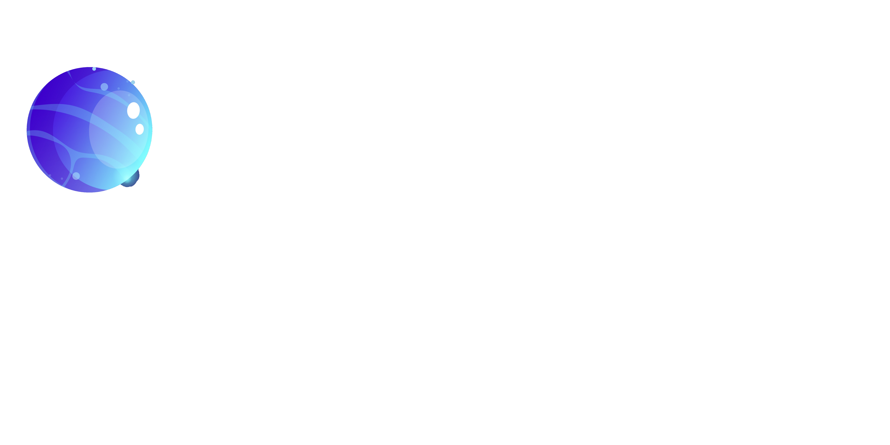
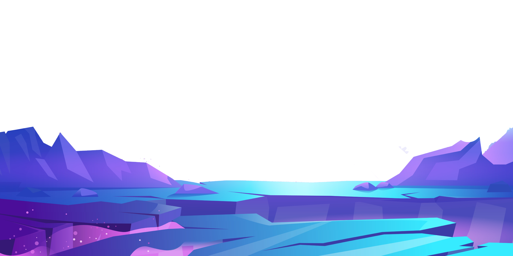

El diseño creativo combina arte, comunicación y tecnología para transmitir mensajes visuales impactantes. A través del color, la tipografía y las imágenes, es posible generar experiencias únicas para los usuarios.
El diseño gráfico es una herramienta fundamental para la publicidad, el marketing y la comunicación visual. Permite crear identidades de marca, mejorar la experiencia de usuario y transmitir información de manera efectiva.
El efecto Parallax es una técnica moderna que ayuda a crear sitios web más atractivos e interactivos. Combinado con principios de diseño gráfico, permite generar experiencias visuales memorables.